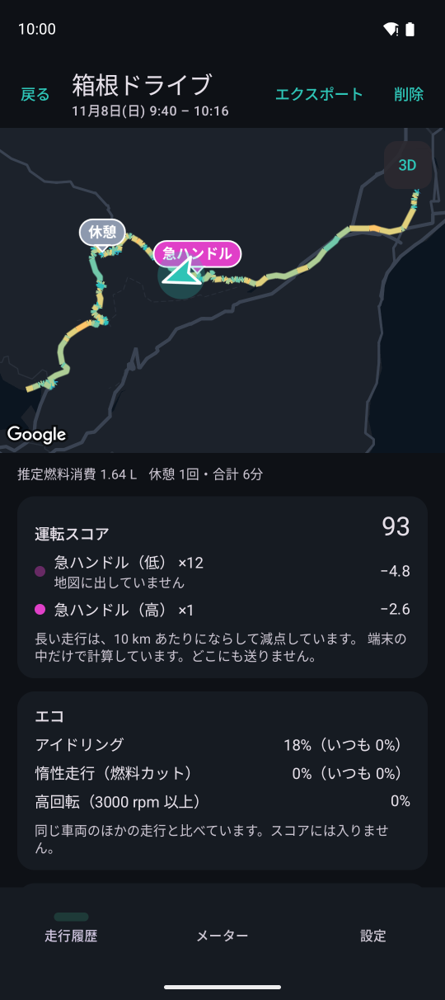
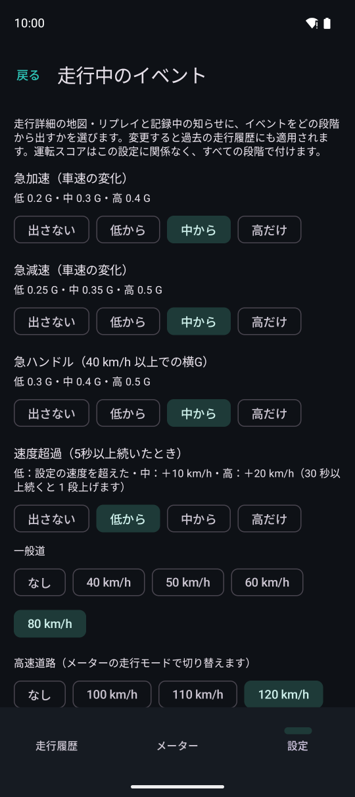

運転スコアとイベント
走行ごとに 100 点満点のスコアを出します。どのイベントで何点減ったかがすべて分かります。計算は端末の中だけで、どこにも送りません。

123走行詳細の集計の下。
- 1運転スコアと、イベントの種類・段階ごとの回数と減点
- 2地図に出していない段階のイベントも減点します（その旨を書きます）
- 3エコの評価（スコアとは別）
スコアの付け方
- 100 点から、イベント 1 件ごとに減点します：低 −1、中 −3、高 −6
- 長い走行ほどイベントが出やすいので、10 km より長い走行は「10 km ÷ 走行距離」を掛けてならします
- 衝撃（段差・悪路でも出る）と休憩は減点しません
- 距離が 1 km 未満の走行と、OBD の車速がない走行（GPS だけ）はスコアを出しません
- スコアはイベントを地図に出す設定に関係なく付けます。速度超過の速度を変えたときだけ変わります
イベントの段階

123設定の「走行中のイベント」。
- 1地図・一覧・記録中の知らせに出す段階（出さない／低から／中から／高だけ）
- 2速度超過の段階：設定の速度を超えた量で決め、30 秒以上続くと 1 段上げます
- 3速度超過の基準の速度（一般道・高速道路）
- 急加速：低 0.2 G（1 秒に約 7 km/h）・中 0.3 G・高 0.4 G
- 急減速：低 0.25 G（1 秒に約 9 km/h）・中 0.35 G・高 0.5 G
- 急ハンドル：低 0.3 G・中 0.4 G・高 0.5 G（40 km/h 以上で、GPS の進行方向の変化から）
- 速度超過：設定の速度を 5 秒以上続けて超えたとき。低：超えた・中：＋10 km/h・高：＋20 km/h
- 衝撃：端末の揺れ（ホルダーに固定してください）
エコの評価
燃費の良さはスコアに混ぜず、同じ車両のほかの走行と比べて出します。
- 燃費：いつもより何 % 良い・悪いか（比べる走行が 3 件・合計 30 km 以上あるとき）
- アイドリング：止まってエンジンをかけていた時間の割合
- 惰性走行（燃料カット）：走行中に燃料をほとんど使っていなかった時間の割合
- 高回転：3000 rpm（ディーゼル車は 2500 rpm）以上で走った時間の割合